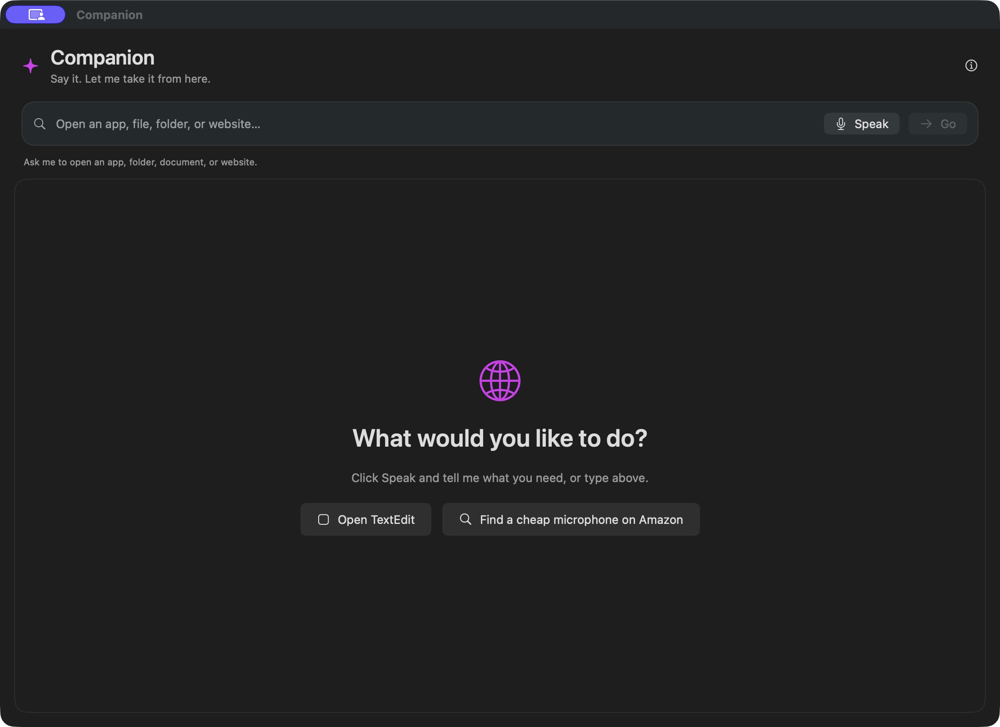
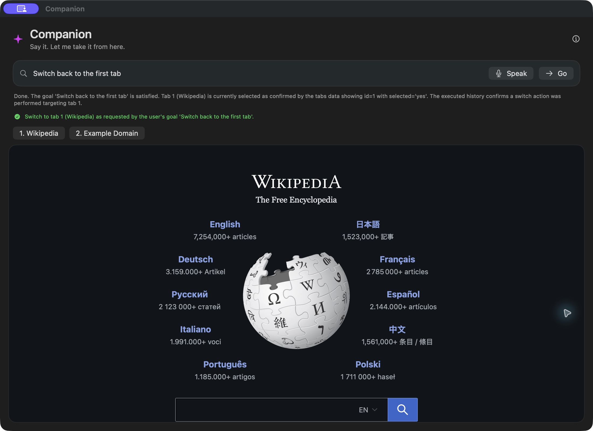
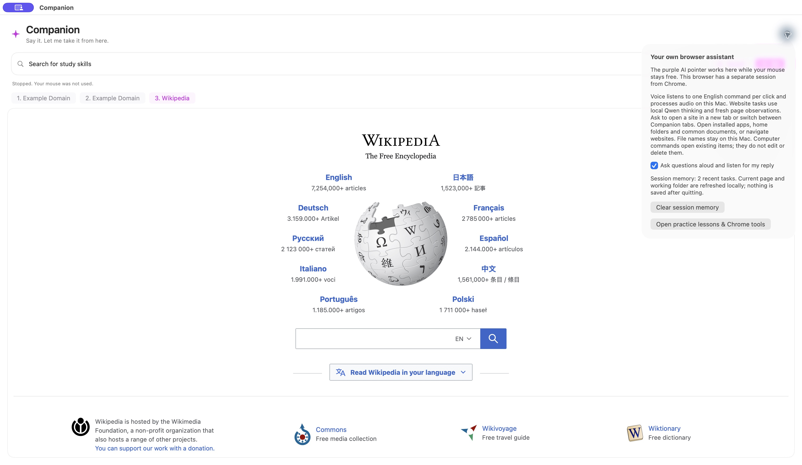

LEARN IN THE APPLICATION YOU ALREADY USE
Learn directly
through your screen.
Companion is an AI teaching companion for Windows and macOS. Ask “How do I do this?” or “Where is this on my screen?” and receive guidance in the application where you are learning, without searching the internet for a tutorial. This first Mac prototype explores the foundations; the complete teaching experience is still being built.
WATCH THE REAL APP
A short walkthrough before you install.
61-second recording of the real Mac app, captured at a low frame rate. Gaps between sections are shortened; captions explain the actions.
TRY THE TEACHING VISION
Ask, see, understand and practice.
Scripted preview. Guided examples illustrate the interaction design, including a proposed teaching flow. Real AI runs in the Mac download below.
Ready. Select Go to try this guided example.
What would you like to do?
Run the example to watch the goal become a verified result.
These guided examples show interaction design. They do not browse real websites.
Try it: Go runs the selected example. Stop cancels its animation. In the context scenario, use “Switch back to the first tab” after the new tab opens.
Use the native app for free-form language, real websites, on-device voice, and local file-opening commands.
ACTUAL MACOS APPLICATION
The real native interface.
Three authentic views of the first prototype. Its controlled web tasks test input, context and execution mechanisms; they are a development environment, not the identity of the final teaching product.



COMMUNITY VALUE
Help Albuquerque learners build confidence.
For UNM and CNM students learning unfamiliar software, Companion aims to turn a moment of confusion into a guided step inside their work. Albuquerque residents returning to school or developing job skills could use the same approach to recall a forgotten procedure without leaving an application to search for tutorials. The goal is practical independence and confidence across the software people use for study and work; a learner pilot will evaluate these benefits.
WHY THE BOUNDARY MATTERS
The model proposes.
The executor decides what can run.
In the native app, Ollama receives bounded page observations and task context. Swift validates the action, resolves observed targets, and uses a controlled executor. A separate goal check compares the actual page with the original instruction.
No arbitrary model-generated shell, JavaScript, coordinates, or OS clicks are accepted.
- 1Understand the request
Typed goal or optional on-device English speech
- 2Plan from the current state
Local Qwen with observed links, tabs, and recent context
- 3Validate and execute
Allowlisted browser actions with cancellation and bounded retries
- 4Check the whole goal
Continue unfinished work or report a verified result
FOR TECHNICAL JUDGES
Inspect the real Mac prototype.
The download includes the actual app and a setup guide. Model weights, private signing keys, personal documents, and credentials are not included.
SHA256 integrity checksumNative test setup
- Apple Silicon Mac and macOS 14 or later
- Tested on a Mac with 16 GB RAM
- Ollama running locally with
qwen3.5:4b - Approximately 3.3 GB model download obtained separately
- Internet for websites; voice is optional
Development distribution: this build is locally signed and not notarized. macOS may block a downloaded build. Do not disable OS security protections; the public preview remains available without installation.
Current native archive is arm64 only. Windows and Intel Macs can use this browser preview but cannot run this build.
First prototype and the teaching roadmap
Working in the Mac prototype
Public website navigation and search, observed-link selection, context across commands, Companion tabs, optional voice clarification, and bounded opening of installed apps, folders and common documents.
Still proposed
More capable AI models, Windows support, permissioned teaching across office and creative applications, visual tool location, demonstrations, and guided practice. Model and hosting choices will be evaluated for capability, cost, latency, and privacy; future cloud processing would require clear data controls. Native distribution and accessibility validation will mature alongside these features.